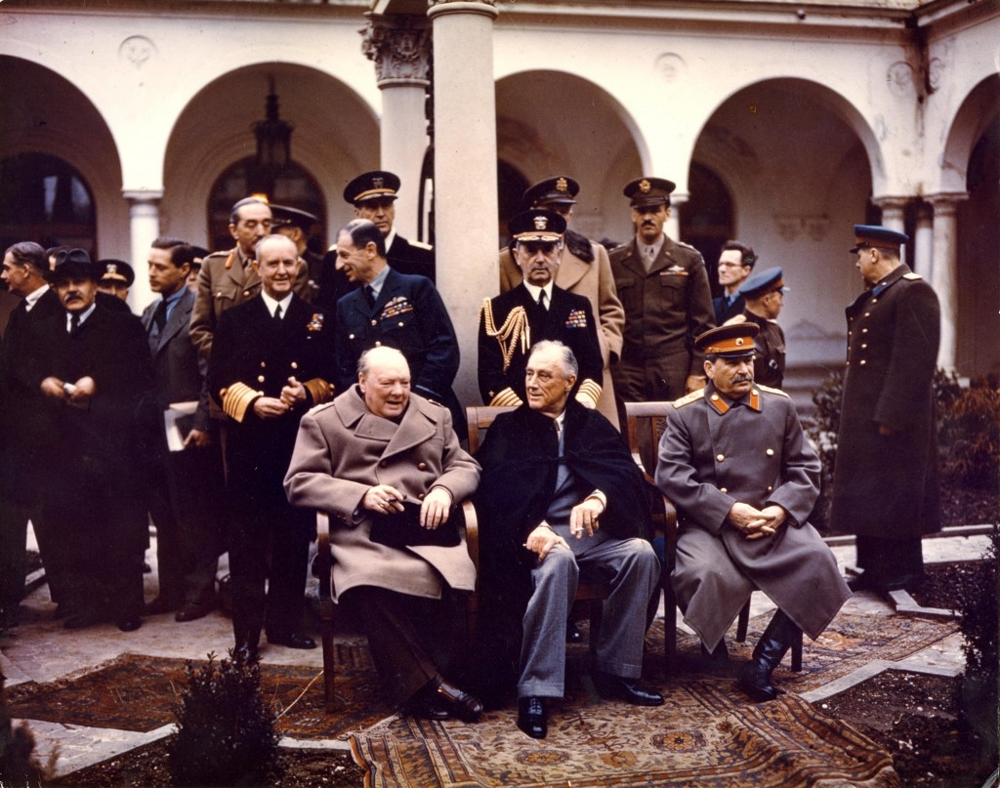

Though the Cold War is famous for the silent international struggle between the United States and the Soviet Union, the impact that the war had on the policy of the United States in international relations and the internal effects of international rivalry had a far greater impact on the country as we know it. The true origin of the Cold War was not in the struggle for the upper hand following World War II, yet the spread of communism following the democratic Russian Revolution of February 1917 (The United States, the Soviet Union, and the End of World War II). The US, always a champion of democracy, saw a system they approved of being quickly replaced by one of which they were wary. When the Bolsheviks arose in October of 1917, President Woodrow Wilson quickly joined the ranks of other countries to break diplomatic relations and not recognize the new regime (Recognition of the Soviet Union, 1933). The distrust of the Soviet Union had set in, before the Union of Soviet Socialist Republics was even formed.
When World War II started in 1939, the US already resumed diplomatic relationships with the Soviet Union in 1933. Fighting with the allies, the USSR grew to show the strength of its Workers' and Peasants' Red Army, with over 11,365,000 soldiers and officers by the end of the war (Red Army). However, that number was significantly less at the start of the war, following a June 1937 political purge used by Joseph Stalin to clear dissenters and unwanted officers from the military. The army returned to full strength by the end of the war, as more troops were recruited from the younger generations and previous non-army members. By February 1945, the USSR had an army not to be lightly reckoned with. In the Yalta Conference, the US had a major turning point of perspective: the USSR was less an ally and more of a possible future enemy, bargaining for their own interests. While Churchill and Roosevelt were not 100% happy with all bargains, they doubted that they could quickly defeat Japan without Soviet help. As such, the agreement was that the USSR would join the war with Japan three months after the conference, while Western Europe and the US would tolerate the Soviet occupation of some Eastern European countries (The Yalta Conference, 1945). After Franklin D. Roosevelt died in 1945, the once popular Yalta Conference gained a sour reputation as the event which allowed the expansion of communism, kicking off the Cold War.
In the Cold War, the threat of the expansion of the Soviet Union had the United States on edge. Following the great technological weaponry advances brought by World War II, each side feared being outpaced in the arms race. If one country had a weapon which the other did not, they would rush to develop the technology. That suspicion of the Soviet Union leaked out into the society at large, causing rampant red hunts and anti-communist propaganda, as well as a greater interventionist international policy on behalf of the US in preventing the feared Domino Effect of the spread of communism.
The central layout and small structure of the museum is intended to create a mildly claustrophobic atmosphere to mimic the feel of a bomb shelter. This setting provides a air of paranoia and fear that permeated the era. By centering the display on a large, open lobby, which is linked by a narrow passageway to two narrow rooms, the architecture mirrors the political understanding of the era-a transfer from a clear and straightforward period into a dark time of secrecy and intrigue. Through the large missile in the center of the hallway, the method of war leads to the intrigue and secrecy of the later rooms, smaller and narrower to mirror the knowledge available to the public.
In addition to land wars, the US developed an advanced preventative system to deal with possible nuclear attacks, such as these anti-aircraft missiles named after the Greek mythological goddess of victory. The arms race between the US and the Soviet Union led to advanced technology, the Nike rockets evolved into NASA first-stage engines, another program started by the Cold War arms race. The technological advancements of the Cold War heightened the necessity of the government to the people-surely if they need such strong weapons to defeat the enemy, the enemy must be quite frightful, right? By the rapid acceleration, the community cultures of America were left behind for basement bomb shelters and constant fear.
The Cold War directly led to a new period of US history of having an interventionist foreign policy. The predominant theory surrounding the spread of communism was that it would spread like a cold as soon as it could. As such, the US got involved in land wars in Vietnam and Korea, trying to tear down the popular, even democratically elected, communist sympathizers. This ideology of stopping communism at all costs was a direct result of the Cold War-the US would oppose anything that was tied to the Soviet Union. The ideology further perpetuated fear and paranoia on the part of the general public as well, since each war was the US trying to defeat communism, the faceless monster that was popping up everywhere.
This item is not as much a direct object, yet the massive list of names permanently ruined by McCarthy, written across the walls of the room to provide a sense of scale of the McCarthy Trials. The impact which the Cold War had on the average American was heavily engrained into the culture of the time, yet definitely much more visibly than the war itself. Neighbor would turn against neighbor, friend would report friend. The lasting suspicion tore apart the sense of community previously prevalent.
The Cold War was near to ending in the 1950s, with both sides giving tentative treaties to protect the peace. However, Eisenhower was wary of the advances and feared that there was a nuclear attack being planned. In 1954 he authorized secret spy plane flights over the Soviet Union for scouting for possible missile base development. One such plane was shot down, taking pilot Francis Gary with it (Roberson). Captured by the Soviets, he confessed to the real purpose of the flight under torture, blowing the shoddy political cover established by the US. Diplomatic relations between the Soviet Union and America took a turn for the south, quickly deteriorating to pre-negotiation conditions. This changed the government's policy to be more committed, dedicated to killing the threat of communism, since the hopes of negotiation had been shot.
The Yalta Conference agreements started the feuding of the United States and the Soviet Union. In efforts to protect countries perceived at risk of communist influence, the US interjected in the affairs of many countries following the regret of the Yalta Conference. Most notably, the US tried to uphold democracy in split Berlin, a very physical reminder of the cultural and political divide being widened by each side. These papers were the final instigator of much of the interest leading up to the Cold War, and mark the transition the era.
This Red Scare poster from 1951 is a typical poster from the time. Fear of communism ran rampant, with information coming to the typical citizen only through government issued propaganda. Posters sponsored by the State Department and civil groups adorned the image of communism with harsh imagery surrounding impressment, prison camps, and general threats of world domination. This contributed greatly to the fearful, paranoid mentality of the general population, which then eagerly supported the government in intervening in at risk countries (Crowley).
The Wall divided Berlin in half, into the French, US, and British controlled West and the Soviet Union controlled East. Not only did the wall cause great political tension, it acted as a constant reminder of the harsh differences in government between the West and the communist Soviet Union. The president spoke against the Wall, and with it, the Soviet Union. Soon the wall came to be a physical reminder of the alienating differences and the heightening US fear of communism, further provoking the distrustful international mindset.
John F. Kennedy visits Germany for the first time and delivers a stirring speech there. Directly addressing the issue of communism, he touts the instability and injustice of the rule of the Soviet Union, saying that "there are some who say that in Europe and in elsewhere, we can work with the Communists. Let them come to Berlin. ... Real lasting peace in Europe can never be assured as long as one German out of four is denied the elementary right of free men and that is to make a free choice ... all free men wherever, they may live, are citizens of Berlin." By directly speaking out against affect that communism has on Berlin, he condemns the entire Soviet Union's political stance in sweeping, exaggerating gestures intended to rally patriotism and conformance enforcing spirits back in the US, while presenting a common point for the rest of the world to support. Through his speech, he condemns the Soviet Union, heightening the tensions of the Cold War, and rallies the US against them, creating greater distrust of the international stage for allowing the Wall.
Senator Joseph McCarthy is a shining example of the fear and rampant paranoia caused by the Cold War. On February 9th, 1950, he announced that he had the names of over 200 members of the Communist Party, not only in the US, but specifically in the Department of State (McCarthyism). His speeches led to the arrest of hundreds of likely innocent people until 1954 when he was denounced by Dwight Eisenhower while trying to attack the US Army, which failed miserably. His attitudes reveal that the culture of America at that time was one that tolerated witch hunting, as the era was often compared to.
Lining the main corridor of the museum are quotes scattered across the walls. They depict retrospective views of the Cold War, as well as the views of the time on the subject. In this example, we see how the government was making mountains out of molehills, yet everyone ate it up like cake. The paranoia was so engrained into the popular culture that to disagree with it was to be red, a communist. The hive mentality of America is always influenced deeply by the prevalent views of the time, yet the Cold War brought a different kind of influence, a twisted patriotism that turned neighbor against neighbor while destroying the community of the country (Higgs).